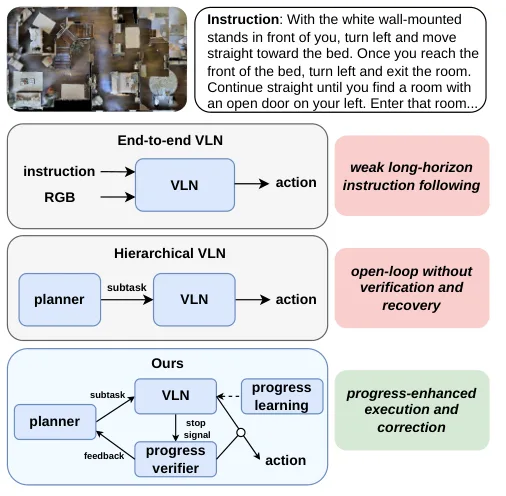
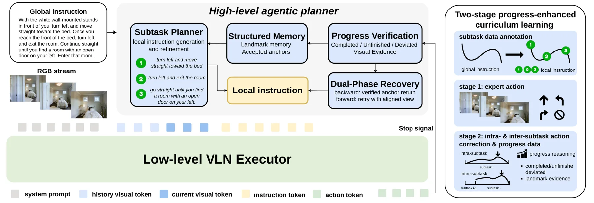
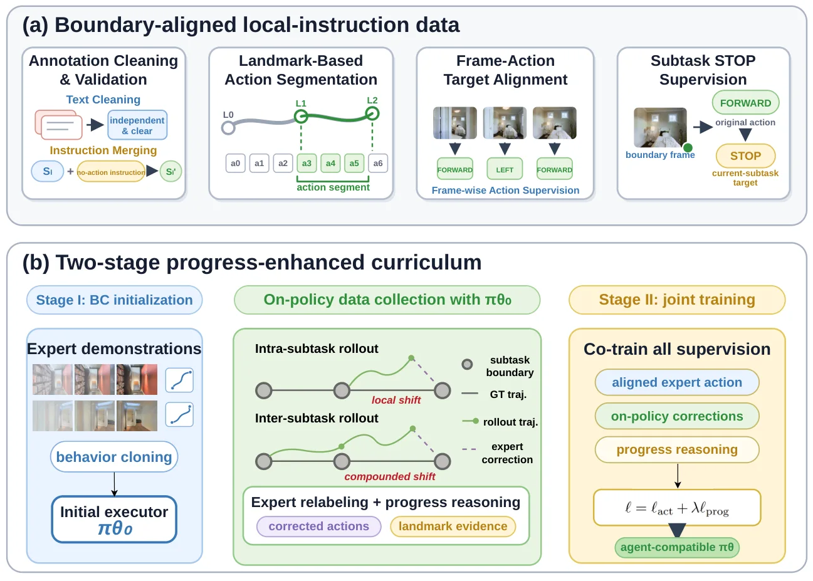
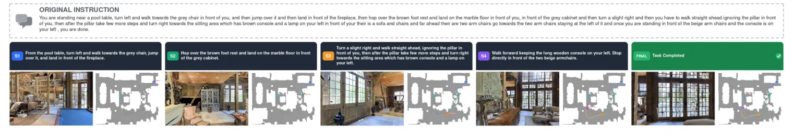
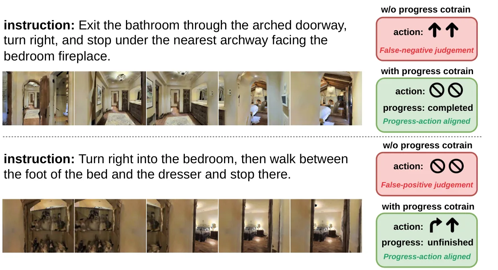
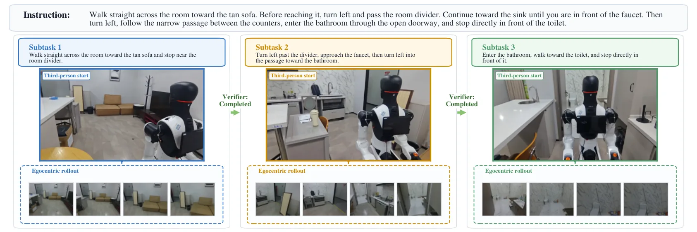

LeaP-VLN：把“子任务是否完成”变成可独立验证的事件
Learning and Verifying Progress: Closed-Loop Agentic Planning with Progress-Enhanced Execution for Long-Horizon Vision-Language Navigation
一句话：它不再相信执行器自己说“到了”，而是让另一个模型看着执行历史判定，并把通过验证的状态冻结成可以回退的锚点。可借的核心是“可信锚点 + 视角重选”这套恢复协议：它把误差恢复从“从偏掉的状态继续规划”改成“回到已知好状态再重试”，代价是路径效率下降（SPL 掉），换来完成率上升。
R2R-CE success rate
R2R-CE navigation error
RxR-CE success rate
作者、单位与技术谱系 · Research context
作者与单位
研究脉络
- NavGPT 式的分层 planner–executor方法基座关系：沿用“高层显式推理 + 低层导航控制器”的分解，但指出其关键缺陷：executor 自己终止就被当作子任务完成。[论文 §II-B]
- Landmark-RxR 细粒度对齐标注数据上游关系：子任务切分与子指令完全依赖它的对齐标注，本文只做清洗、合并与边界重对齐。[论文 §V-A 与参考文献 [22]]
- DAgger 式专家纠正 + CorrectNav 自纠正训练上游关系：用策略自己跑出的状态再由专家重新标注动作，属于 DAgger 家族；而 CorrectNav 代表了“推理期自纠正”的相邻路线，本文用独立验证器替代自反思。[论文 §II-C、§V-B2]
合作网络
- AgiBot ↔ 北京大学AgiBot → Peking University（先进制造与机器人学院）关系：共同署名 / 双隶属[论文 HTML 作者栏]
- Qwen3.5-VL-4B → 执行器Qwen3.5-VL-4B-Instruct → LeaP-VLN 执行器关系：技术依赖（初始化权重）[论文 §VII-B 实现细节]
- AgiBot Genie 02 ↔ 实机验证AgiBot Genie 02 机器人 → 真实环境 episode关系：自有平台验证[论文 §VII-E 与 Fig. 7]
单位与角色标注来自论文作者栏（* 同等贡献、† 项目负责人、‡ 通讯作者）；Qwen 系列模型是公开的技术依赖。实机实验的 SLAM 模块未在论文中展开，其精度上限未评估。
方法本质拆解 · What actually changed
是不是微调？
执行器是两阶段训练：先用 140 万条专家动作（R2R 全路线 + 由 RxR 分解出的子任务样本）做行为克隆，再用 220 万条样本联合训练，其中 80 万条带专家纠正动作、约 20 万条带进度推理目标。高层 agent 与验证器是冻结的 Qwen-3.7-Plus，不参与训练；执行器从 Qwen3.5-VL-4B-Instruct 初始化，原文未说明是全参还是参数高效微调。
有没有额外约束？
接口层约束很硬：只有执行器输出 STOP 才允许触发验证，验证通过前记忆不更新；每个锚点绑定“位姿 + 当时图像”，第一个锚点固定为起点；判定偏离后执行器历史必须重置。数据侧约束是子任务边界：所有训练样本按 Landmark-RxR 的标注切段，horizon-K 的块不允许跨子任务边界，边界处用显式 STOP 目标替代原来的路线延续动作。
推理/后端到底做了什么？
推理是分层循环：高层 agent 拆解/调整子指令 → 执行器每步看当前帧与最多 8 帧历史、输出 4 个动作 token、只执行前 2 个 → 遇 STOP 调验证器 → 按 C/U/D 推进、继续或回退。回退由 SLAM 点导航执行到锚点位姿，随后在原地取全景并选一个视角重试；没有全局 BA、没有地图优化，建图能力完全依赖外部 SLAM。
方法本质是什么？
本质是把“进度”从执行器的隐式状态提升为可外部核验的事件，并用“通过核验的状态”构造一条只能前进的可信轨迹。它没有做的是：没有改进底层定位、没有让验证器与执行器共享表征、也没有解决“验证器自己也错”的情况——验证器误判会直接导致错误推进或无效回退，这一点论文没有单独量化。
输入是路线指令与自视角 RGB 流，改变的位置是“子任务推进的判据”（从执行器 STOP 改为独立验证器的三态判定），动作是可信锚点冻结 + 退回锚点 + 全景视角重选后重试，直接效果是 R2R-CE SR 从 65.1% 升到 67.5%、NE 从 4.24 m 降到 3.71 m，代价是 SPL 下降。

桥接价值Bridge
桥接价值
我们的估计链路里也有“系统自己认为收敛了”的问题：优化器报收敛、协方差很小，但实际已经偏了。LeaP-VLN 的做法提供了一个可搬的结构——把“完成/收敛”的判定从产生结果的模块里拿出来，交给一个看历史证据的独立判定器，并且只在判定通过时才把状态写入可信集合。第二个可借点是恢复策略：不是从坏状态继续，而是回到最近一个通过验证的锚点，重新选一个观测视角再试。这对重定位、回环失败后的恢复都可直接类比：回到上一个可信关键帧，换视角重匹配，而不是在当前漂移状态下硬优化。
方法与模块Method
方法摘要
高层 agent 先把全局指令拆成有序子指令，并在每次派发前用记忆（地标语义 + 已接受锚点）调整子指令；记忆里每个锚点记录位姿与当时的自视角图像，第一个锚点是起点。执行器以子指令、视觉历史（最多 8 帧）与当前帧为条件，一次预测 4 个动作 token、执行前 2 个（滚动时域）。只有执行器输出 STOP 时才触发验证：验证器输入同样的子指令、历史帧与末帧，输出三态判定及证据。判定 C 就把地标语义与证据帧写入记忆、终点作为新锚点并推进；U 则继续未完成部分；D 则记忆不变、退回锚点、环视选视角后重试。训练上，第一阶段 140 万条专家动作做 BC；第二阶段 220 万条（含 80 万条纠正、约 20 万条进度推理）联合优化 ℓ_act + λℓ_prog。
可迁移模块
第一是三态验证器接口（完成 / 未完成但在路线 / 偏离）：它把二值“到了没”细化成可执行的三种动作，我们可以照搬到“重定位成功 / 部分成功 / 失败”的判定上。第二是锚点冻结 + 视角重选：退回已知好状态、在该处增加观测（全景）再重试，这是典型的主动感知恢复，成本低于全局重规划。第三是进度推理作为辅助监督：把“已完成/剩余/是否偏离”写成结构化目标与动作联合训练，思路可以用于让我们的前端在输出位姿的同时输出“当前处于哪一段”的判别。

证据Evidence
关键证据与数字
R2R-CE val-unseen（Table I）：NE 3.71 m、OSR 73.9%、SR 67.5%、SPL 59.1%；同为单目 RGB 且不加额外导航数据的最强基线 CorrectNav 为 NE 4.24 m、SR 65.1%、SPL 62.3%，即 NE 降 0.53 m、SR 升 2.4 个点，但 SPL 低 3.2 个点。RxR-CE：NE 3.89 m、SR 69.6%、SPL 52.8%，优于 CorrectNav 的 4.09 m / 69.3%，但在使用额外导航数据的方法里仍低于 Qwen-RobotNav-4B 的 75.2%。消融（Table II）：只留 agentic planning（A）时 R2R SR 55.5%；加动作纠正（A+B）61.7%；B+C（纠正 + 进度共训）在 R2R 上 67.0%、RxR 上 62.5%；四项齐全后 R2R 67.5%、RxR 69.6%。
边界与下一步Limits & Next Step
边界与风险
SPL 是明确的代价：锚点回退与重试会拉长实际路径，R2R 上比 CorrectNav 低 3.2 个点，RxR 上加恢复后 SPL 也从 54.4 降到 52.8，作者自己把这写成“用路径效率换完成率”。第二个风险是复现性：高层 agent 与验证器都是 Qwen-3.7-Plus（闭源 API），执行器从 Qwen3.5-VL-4B-Instruct 初始化但原文没有说明是全参微调还是 LoRA，这使“训练成本与可迁移性”难以照抄。第三个边界是真实机器人证据太薄：AgiBot Genie 02 上只有一个定性成功 episode，没有失败率、没有多场景统计，而且锚点回退依赖外部 SLAM 点导航，系统能力里混入了未评估的定位模块。
下一步实验
第一步在我们自己的重定位上复制三态判定：把“匹配内点数/重投影误差/位姿协方差”组合成 C/U/D 三态，只在 C 时把关键帧写入可信集合，比较误接受率与后续漂移。第二步量化“回到锚点 + 换视角”相对“就地继续优化”的收益：同一段退化序列，两种恢复策略各跑 20 次，比较最终误差与耗时。第三步把验证器换成开源小模型，测准确率下降多少、延迟降低多少，判断这套闭环能否上边缘设备。







